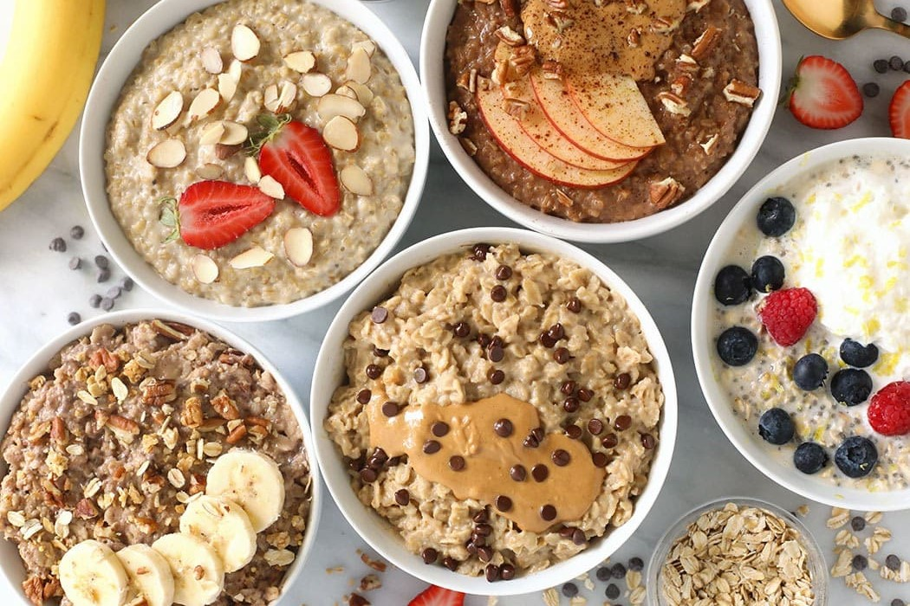

Oatmeal
A quick and filling meal that can be made a number of ways.
Servings
1

Ingredients
- 1/2 cup old-fashioned rolled oats
- 1 cup water or milk
- Toppings of your choice (i.e. fresh fruit, nuts, honey, peanut butter, chocolate chips)
Instructions
- Combine oats and water or milk in a pot over medium/high heat.
- Stir until the mixture begins to boil, then lower the heat and continue cooking for another 5-7 minutes while stirring occasionally.
- The oatmeal is ready when it is creamy and the oats have absorbed most of the liquid. Place the oatmeal in a bowl, add the toppings of your choice, and enjoy!